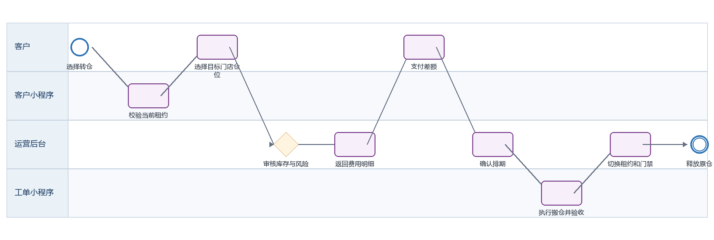
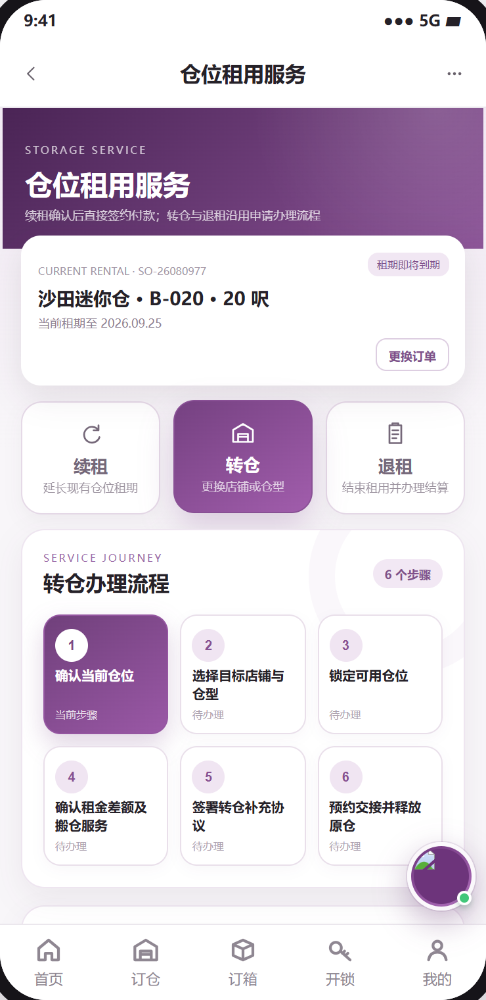
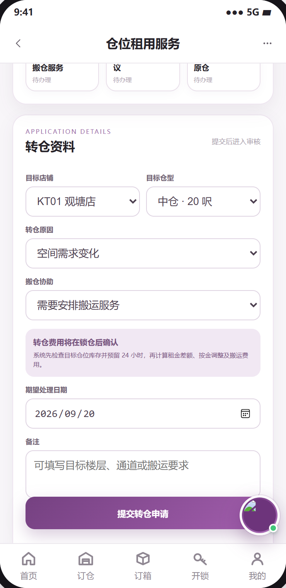
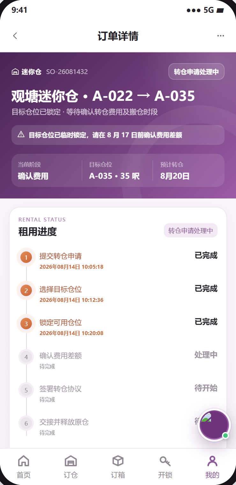

迷你仓转仓 PRD
下载 Word 文档迷你仓转仓 PRD
客户小程序研发详细需求规格 · V2.0 · 2026-09-08
定义客户申请更换门店或仓型、后台审批、补差价、排期交接和原仓释放的完整规则。
| 属性 | 内容 |
|---|---|
| 文档编号 | MP-ST-04 |
| 适用端 | 客户小程序、运营后台、工单小程序及领域服务 |
| 范围 | 资格校验、目标仓选择、临时锁仓、费用试算、审批、支付、搬仓排期、交接。 |
| 不在本模块范围 | 内部搬运工单执行细节。 |
1 目标与边界
1.1 本期范围
资格校验、目标仓选择、临时锁仓、费用试算、审批、支付、搬仓排期、交接。
1.2 不在本模块范围
内部搬运工单执行细节。
1.3 角色与系统责任
| 角色或系统 | 职责 |
|---|---|
| 客户 | 浏览、选择、签约、付款、提交申请、查询进度 |
| 客户小程序 | 采集意图并展示服务端状态，不自行决定价格、库存、资格或审批结果 |
| 运营后台 | 维护主数据、价格、库存、可操作项、审批、异常处理和人工改派 |
| 工单小程序 | 承接送取、验收、搬仓、清仓等线下任务，回传节点、附件和异常 |
| 领域服务 | 保存订单、租约、箱体、预约、支付与合同的权威状态并发布事件 |
2 BPMN 业务流程

圆形表示开始或结束事件，圆角矩形表示任务，菱形表示服务端判断。
跨端节点必须先写入领域服务，再由事件刷新客户侧时间线。
3 状态机与准入
| 状态码 | 客户文案 | 进入条件 | 下一步 |
|---|---|---|---|
| DRAFT | 填写中 | 未提交 | 提交 |
| PENDING_APPROVAL | 待审批 | 目标仓短时预留 | 通过或驳回 |
| REJECTED | 已驳回 | 记录原因与可修改项 | 重新提交或取消 |
| PENDING_PAYMENT | 待付款 | 费用已确认 | 支付 |
| SCHEDULING | 待排期 | 支付完成 | 生成搬仓工单 |
| MOVING | 搬仓中 | 现场任务执行 | 验收 |
| COMPLETED | 转仓完成 | 租约和门禁已切换 | 终态 |
| CANCELLED | 已取消 | 释放目标仓 | 终态 |
状态码是跨端契约，中文文案不得作为业务判断条件；写操作必须携带聚合版本并处理409冲突。
4 页面与交互
本节截图直接取自迷你仓小程序可交互原型的实际页面，不使用根据字段自行生成的示例图；业务权威值仍以服务端返回为准。
4.1 转仓申请
| 属性 | 要求 |
|---|---|
| 建议路由 | /pages/rental/transfer |
| 入口 | 有效租约订单详情 |
| 页面字段 | 原门店/仓位/租期、目标门店/仓型/仓位、期望日期、原因、备注、预计租金差额和服务费 |
| 主要操作 | 搜索目标仓、锁定、提交审批 |
| 通用状态 | 骨架屏、空态、无网络、超时、无权限、数据已变化、提交中、提交成功和提交失败分别实现 |

4.2 转仓审批与费用
| 属性 | 要求 |
|---|---|
| 建议路由 | /pages/rental/transfer-detail |
| 入口 | 提交成功或订单详情 |
| 页面字段 | 审批状态、驳回原因、费用项目、应付、目标仓保留至、排期、时间线 |
| 主要操作 | 修改重提、取消、支付、联系客服 |
| 通用状态 | 骨架屏、空态、无网络、超时、无权限、数据已变化、提交中、提交成功和提交失败分别实现 |

4.3 转仓进度
| 属性 | 要求 |
|---|---|
| 建议路由 | /pages/order/detail |
| 入口 | 支付后 |
| 页面字段 | 工单节点、负责人脱敏信息、预约时间、现场附件、验收结果、新旧仓切换时间 |
| 主要操作 | 查看进度、联系服务 |
| 通用状态 | 骨架屏、空态、无网络、超时、无权限、数据已变化、提交中、提交成功和提交失败分别实现 |

5 业务规则
有效租约且无欠费、无活动续租/退租/转仓申请时才允许转仓。
提交时必须锁定目标仓；审批等待期间锁定时长由后台返回，过期需重新选仓。
费用明细至少包含租金差额、搬运费、按金补退、优惠回收和税费；客户只支付服务端应付。
驳回必须返回 reasonCode、reasonText 和 editableFields；可修改重提，不新建重复申请。
付款成功后后台生成搬仓工单，工单小程序回传到场、搬运、验收、异常节点。
只有新仓验收完成且门禁切换成功后，才释放原仓并完成转仓。
6 接口契约
| 方法 | 接口 | 用途 | 幂等要求 |
|---|---|---|---|
| GET | /rentals/{id}/transfer-eligibility | 查询资格 | 否 |
| POST | /transfers/quotes | 锁定目标仓并试算 | 是，requestId |
| POST | /transfers | 提交审批 | 是，clientRequestId |
| POST | /transfers/{id}/payment-intent | 支付差额 | 是，attemptNo |
| GET | /transfers/{id} | 查询审批和履约进度 | 否 |
通用响应包含code、message、data、traceId和serverTime。
金额使用整数最小货币单位；写接口校验登录身份、资源归属、幂等键和聚合版本。
错误码区分参数、资格、并发、锁定、支付确认、权限和服务不可用。
7 跨端交互和数据一致性
| 方向 | 规则 |
|---|---|
| 小程序到后台 | 只调用BFF或领域服务；后台通过同一业务编号处理。 |
| 后台到小程序 | 后台写领域状态并发布事件，小程序刷新权威状态。 |
| 后台到工单小程序 | 线下任务携带workOrderId、orderId、SLA和附件要求。 |
| 工单到客户小程序 | 扫码、附件和异常先回传领域服务，再生成客户可见时间线。 |
| 消息通知 | 只携带业务编号与深链，不下发敏感合同或门禁凭证。 |
7.1 领域事件
transfer.submitted
transfer.approved
transfer.rejected
transfer.paid
transfer.workorder_created
transfer.completed
8 异常与恢复
| 场景 | 识别条件 | 客户侧与后台处理 |
|---|---|---|
| 目标仓失效 | 审批前被停用 | 驳回并返回同类可选仓 |
| 审批驳回 | 风险或容量原因 | 展示原文原因和可修改字段 |
| 现场验收失败 | 目标仓或物品异常 | 暂停切换，工单回传证据并转人工 |
| 新门禁授权失败 | 搬仓已完成 | 保留原仓权限至补偿完成，生成高优任务 |
9 非功能与安全
列表首屏P95不超过2秒，详情P95不超过1.5秒；长流程返回受理结果和异步进度。
敏感字段最小化展示，日志脱敏，下载资产使用短时签名URL。
所有状态变更记录前后值、操作者、来源端、原因码、时间和traceId。
支持简体中文、繁体中文、英文；日期、货币和地址按香港业务规范展示。
10 埋点与指标
| 事件 | 触发 | 关键属性 |
|---|---|---|
| page_view | 进入页面 | pageCode、source、orderId、businessType |
| action_click | 点击主要操作 | actionCode、statusCode、orderVersion |
| submit_result | 写操作完成 | requestId、result、errorCode、durationMs、traceId |
| flow_step_changed | 业务节点变化 | fromStatus、toStatus、eventId、operatorType |
11 验收标准
AC-01 转仓入口由服务端资格控制。
AC-02 驳回后可在原申请上修改重提并保留历史。
AC-03 支付明细与后台审批金额一致。
AC-04 工单完成前不得释放原仓。
AC-05 转仓完成后订单详情展示新仓位且原仓不可再开锁。
12 研发交付清单
| 角色 | 交付物 |
|---|---|
| 产品与设计 | 页面状态稿、字段字典、三语文案和验收用例 |
| 小程序前端 | 页面、组件、登录恢复、状态处理、埋点和错误恢复 |
| 后端 | OpenAPI、状态机、幂等、权限、事件、补偿和审计 |
| 运营后台 | 配置、审批、异常处理、重试和人工兜底 |
| 工单小程序 | 任务、扫码、附件、节点回传和异常上报 |
| 测试 | 端到端、并发、权限、弱网、重复事件和补偿验证 |